Particle Accelerator Sensor Array
Designing a precise, repeatable manufacturing process to align silicon sensor modules for the Silicon Vertex Detector — part of the Electron Ion Collider now under construction at Brookhaven, New York.
Building a detector for the Electron Ion Collider
I conducted this research across two semesters working part-time for the Relativistic Nuclear Collision Group (RNC) at the Lawrence Berkeley National Lab (LBNL). I worked on the fabrication of a large sensor module called the Silicon Vertex Detector (SVD) for the Electron Ion Collider, currently under construction in New York.
My main responsibilities were creating test sensor arrays for software development, and creating a precise and repeatable manufacturing process that aligns silicon modules for mounting on a large carbon fiber disk.
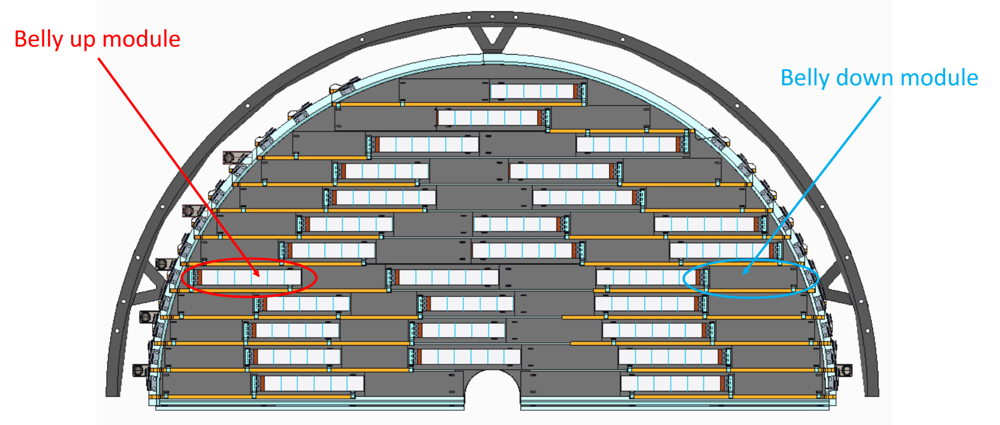
Aligning silicon to carbon fiber, ~2,300 times
My focus was the assembly of the sensor modules — specifically, creating tooling to align the silicon sensor onto a carbon fiber flat sheet. This relatively simple-sounding task becomes extremely difficult given the tight tolerances and handling requirements involved.
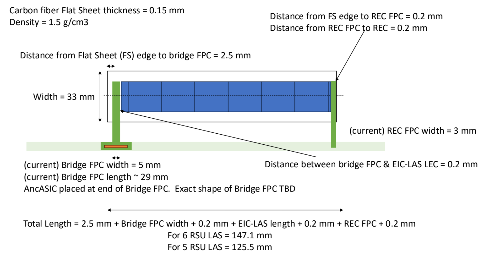
- Position precision goal — translation & rotation0.2 mm
- Repeatable across full production run~2,300 alignments
- No bending or abrasion of sensors — vacuum handling onlyRequired
- Accommodate two different sensor lengthsStretch goal
Two matched pre-alignment jigs
Alignment is achieved using two nearly identical pre-alignment jigs — one for the sensor and one for the carbon fiber. The carbon fiber jig contains a vacuum chamber so the sheet cannot shift during final alignment. Each sheet is aligned physically against a set of pins or flat walls, and the result is then checked optically with a microscope using fiduciary marks on the sensor.
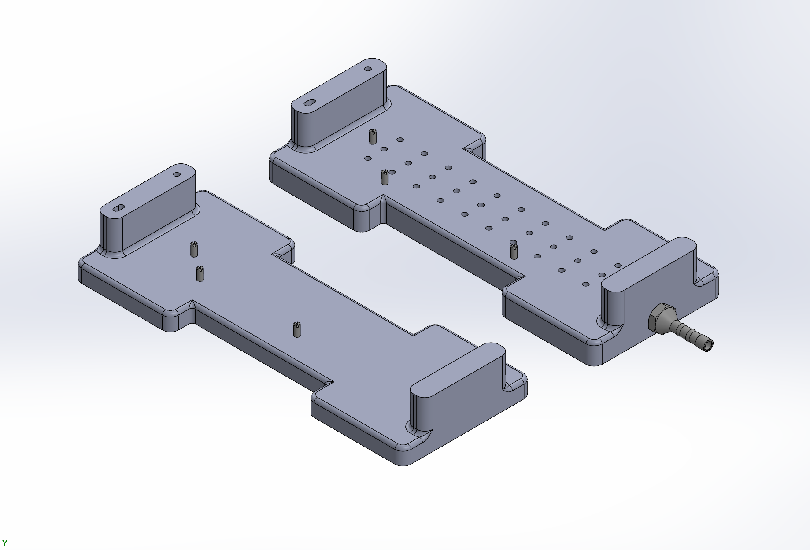
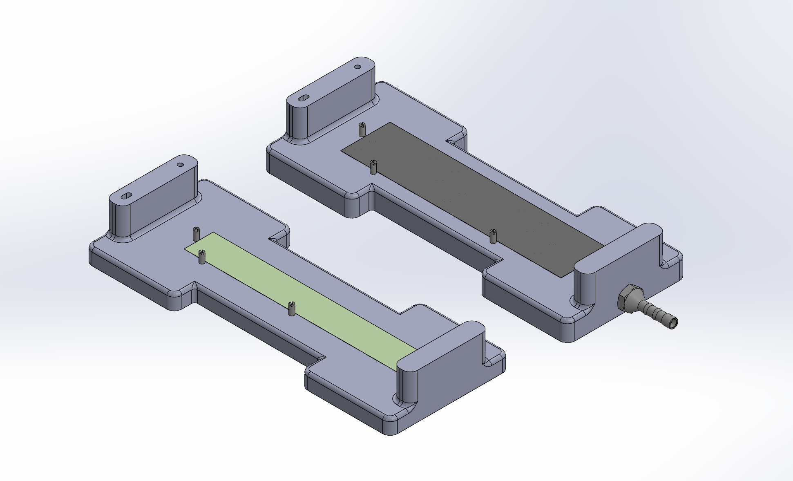
Transferring the sensor without touching it
Because the silicon can't be bent or abraded, every transfer happens through a vacuum grabber fitted with small, ESD-safe suction cups that distribute the force evenly. The grabber keys into pinhole-and-slot features to carry the alignment from one jig to the next.
A vacuum grabber with small, ESD-safe suction cups lifts the sensor. The force is distributed across the cups to avoid bending the fragile silicon.
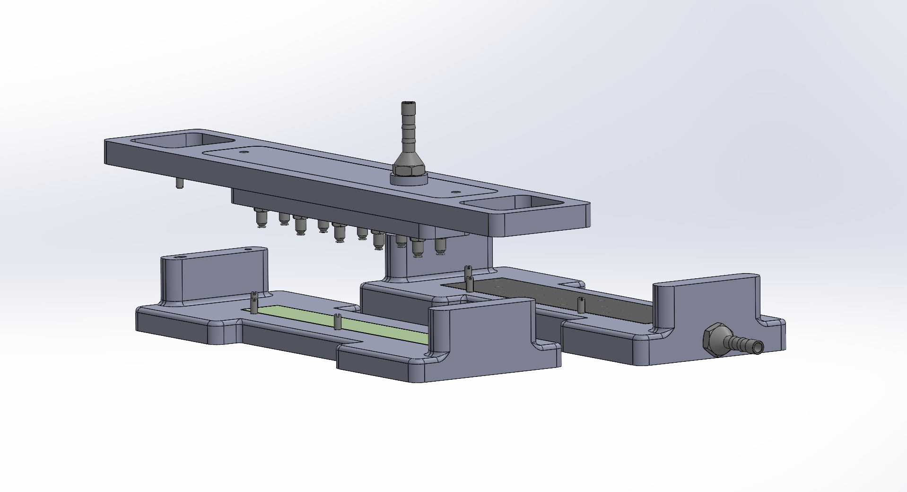
The grabber keys into a pinhole and slot, retaining the alignment captured in the first pre-alignment jig.
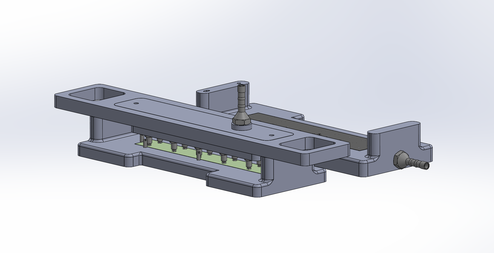
The sensor is carefully transferred over to the second pre-alignment jig, holding position the entire way.
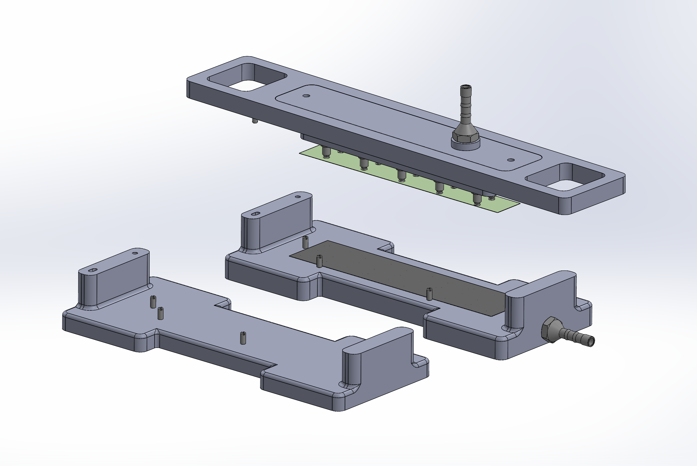
The grabber keys into an identically positioned pinhole and slot on the second jig and glues the sensor to the carbon fiber — preserving the alignment through the bond.
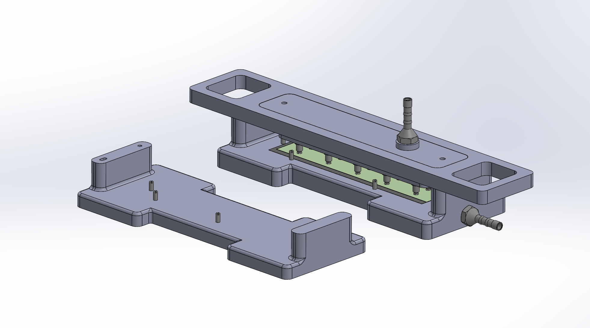
Sensor Module Assembly & Mounting
This is a tool I designed to glue and wire-bond thin silicon sensors to PCB carrier boards. These sensors are scaled-down versions of the ones that will be implemented in the Electron Ion Collider. Over two months I assembled and implemented 20 PCBs, which were tested and validated at CERN and are now being used to run a variety of experiments at LBNL.
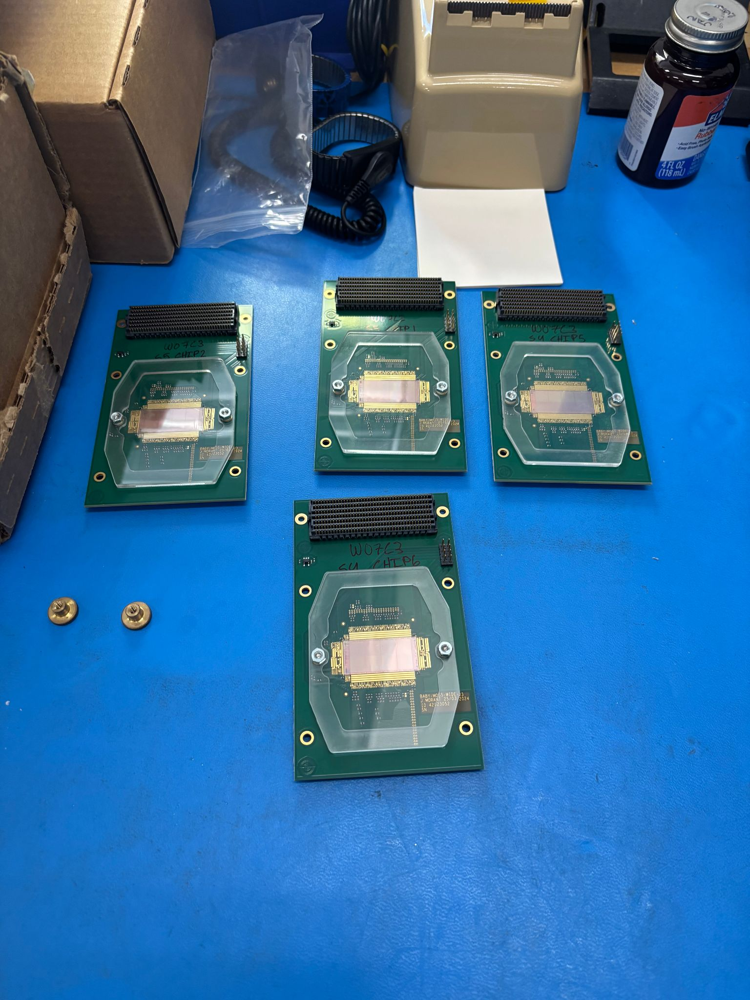
Glue and wire-bond, repeatably
I created a simple jig that lets a technician — in this case, me — quickly glue and wire-bond sensors to boards consistently and precisely. The jig securely holds the PCB while the sensor is aligned optically under a microscope. A foam retaining bar is then screwed down to lock in the alignment.
The jig can then be flipped so glue can be applied through holes in the PCB. Once the glue cures, the retaining bar is removed and wire bonding is performed in the same jig — no re-alignment needed.
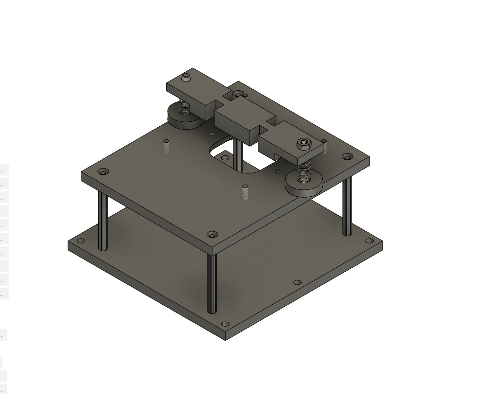
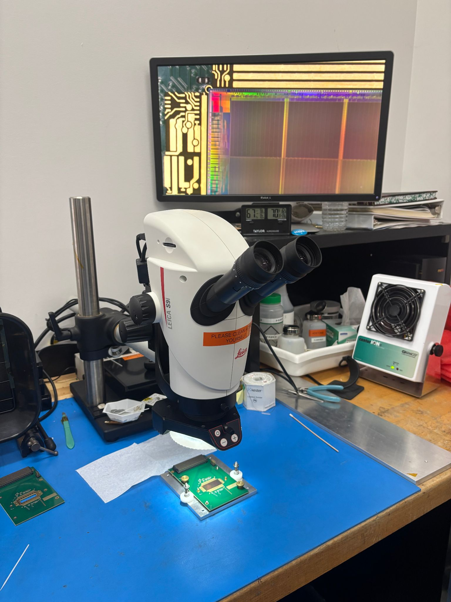
Safe, interchangeable mounting
I designed a mounting fixture so the physicists running experiments can quickly and safely mount the PCBs in different arrays. Each mount gives the PCB a strong aluminum case that protects the delicate sensors and surface-mount components.
The mounts screw into a grid of threaded holes and are designed so the sensor windows always line up perfectly — even across different types of PCB. Arrays are usually set up in custom enclosures for tight cable management.
Those enclosures were also fitted with a water-cooling block, a heater, and thermocouples to record the thermal characteristics of the sensors.
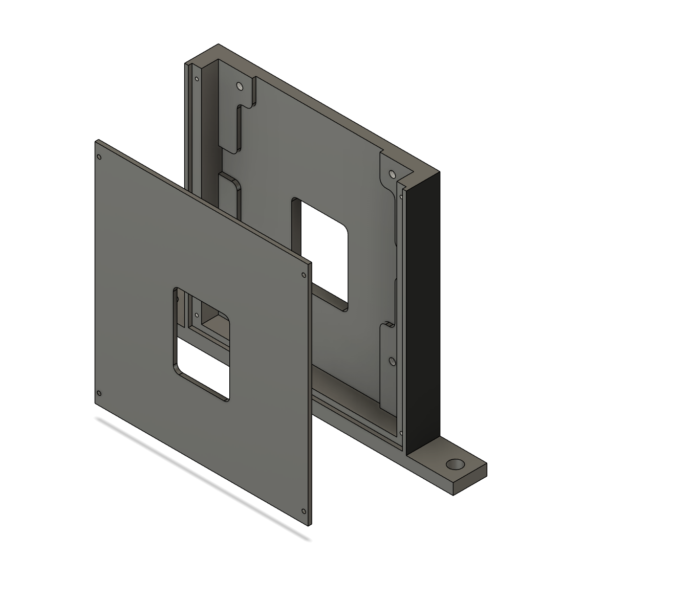